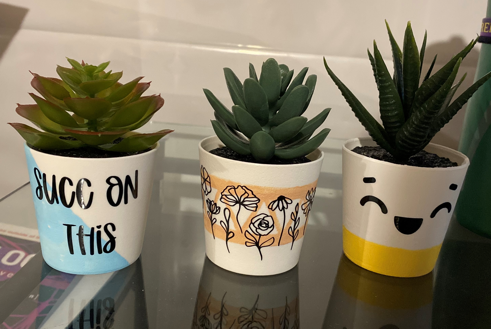
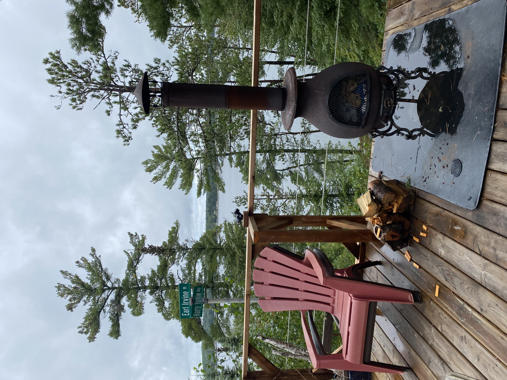
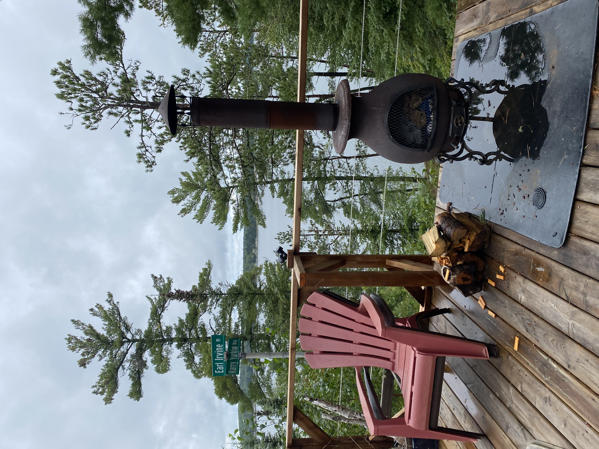
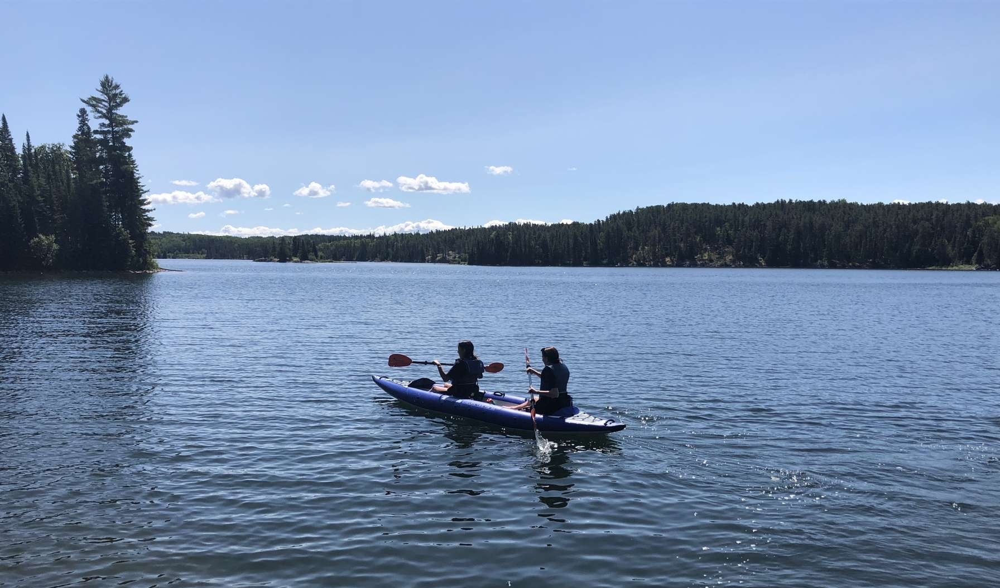
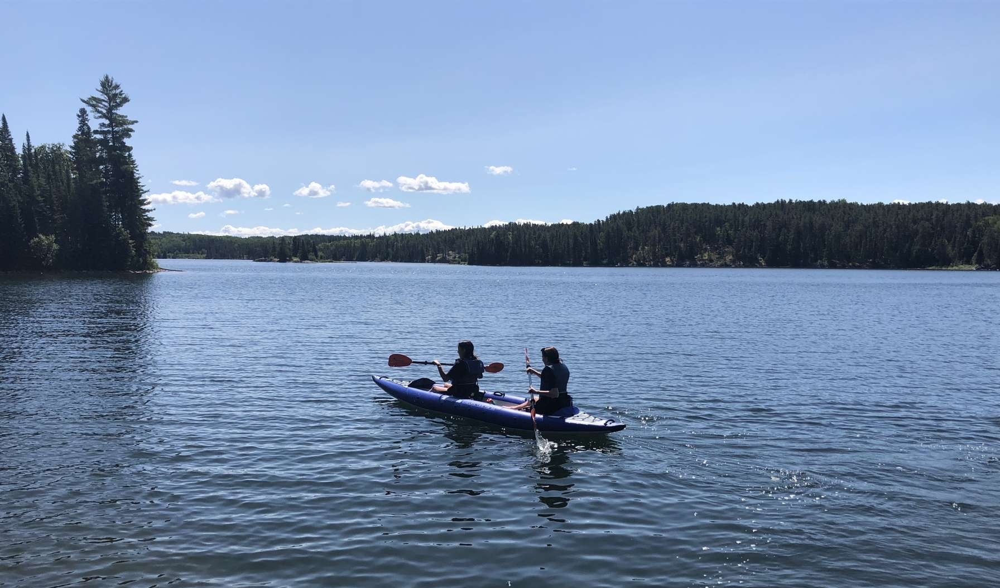

I have always been a creative kid. I have loved art and music since
a young age, and that passion only continues to grow. I have played
guitar since Grade 2, and have done art through my years in school.
Music is always something I turn to. I always have music
playing in my room. On a bad day, I come home, pick up my guitar,
close my bedroom door, and just jam. I also write songs, whether I
was in a great mood, or a bad one. My mood just controls what kind
of song it is. I write the lyrics that portray what I am feeling. No
matter if it is a happy or sad song, it turns feelings into
something beautiful. After I write these songs, even if they are not
complete, I feel like a weight is lifted off my shoulders, as I
leave any bad feelings in the song.
 


 
